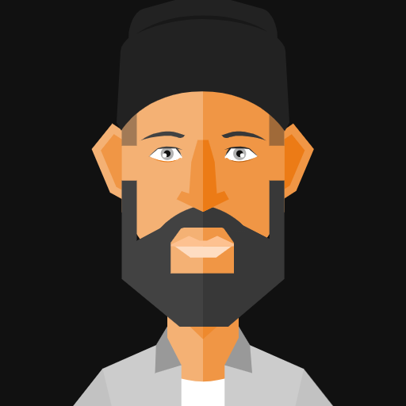

Je suis un développeur web passionné, toujours en quête de nouveaux défis et de nouvelles technologies. J'aime travailler sur des projets complexes et trouver des solutions créatives aux problèmes qui se posent.

Développeur Front-end
HTML . CSS . JAVASCRIPT . PHP . MYSQL

Salut, je suis Farouk Manai
Je suis spécialisé dans les technologies front-end telles que HTML, CSS et JavaScript, mais je suis également à l'aise avec les technologies back-end telles que PHP et mySQL. Je suis capable de travailler sur des projets de A à Z, de la conception à la livraison.
Je suis un développeur axé sur les utilisateurs, toujours en train de penser à la façon dont mes développements peuvent améliorer l'expérience de l'utilisateur final. J'ai une forte attention aux détails et je m'assure de livrer du code propre et maintenable. Je suis également toujours en train d'apprendre et de me tenir au courant des dernières tendances en développement web.